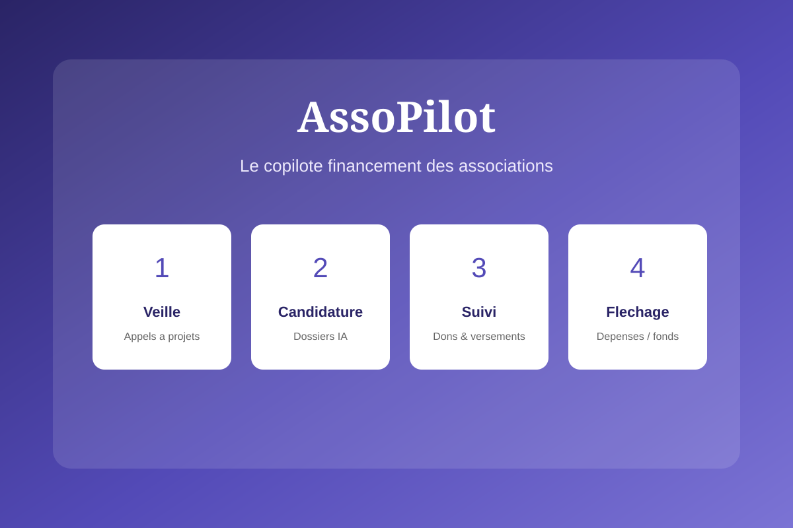

SaaS platform for French associations (feminist orgs first, then the wider social economy). It covers the full funding cycle through calls for projects.
Surface relevant funding calls from followed foundations.
Draft an application tailored to the association.
Follow pledges and payments.
Map expenses to received funding.
Product in development — GitHub repository
In development